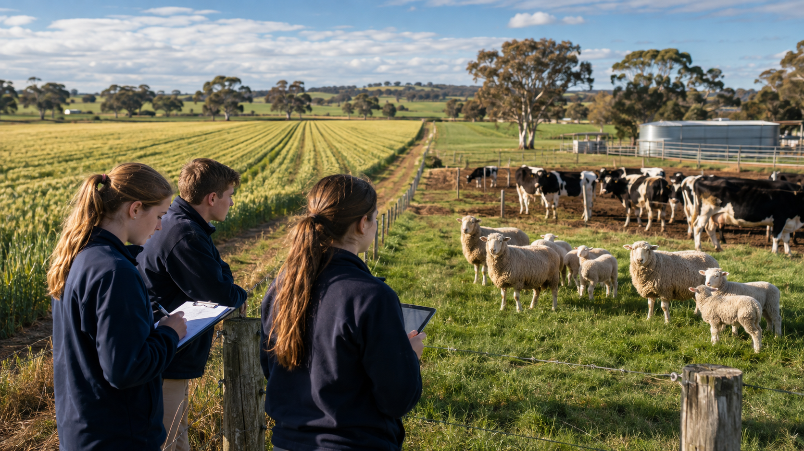

1. Learn
Begin with the matching 2026 programme topics and supplied source material.
Stage 5 Agricultural Technology · 2026
Investigate agricultural systems and management, pastures and cropping, prime lamb production and dairy farming through source-grounded learning and practical evidence.

Stage 5 Agricultural Technology
Investigate agricultural systems and management, pastures and cropping, prime lamb production and dairy farming through source-grounded learning and practical evidence.
How the course works
Each two-week module contains three substantial theory sections, thirty checks and written evidence.
Begin with the matching 2026 programme topics and supplied source material.
Use the student-learning checks and immediate feedback to correct misconceptions.
Explain systems, decisions, evidence, ethics and trade-offs.
Use Print / Save PDF and the folio backup to keep evidence outside the page.
Student evidence. Autosave is device-local practice, not cloud submission. Keep a PDF or folio backup outside the webpage.
How the course works
Each two-week module contains three substantial theory sections. Every named section has exactly ten student-learning checks, followed by written evidence that autosaves on this browser and device.
Begin with the matching programme topics and distinguish supplied facts from details that remain teacher-controlled.
Use immediate feedback, then explain systems, decisions, evidence, ethics and trade-offs.
Autosave is device-local practice. Use Print / Save PDF and folio backup to keep evidence outside the page.
Course pathway
Five two-week modules per term connect the 2026 programme with its numbered theory and activity resources. Where those two source sequences disagree, the course keeps the mismatch visible and does not invent a missing lesson. The final Term 1 module includes authorised topic-test preparation.
Required learning destinations
Use varied Agriculture activities with feedback, saved progress and printable evidence.
Open Busy Work →Watch project-specific clips with a purpose, privacy-enhanced playback and a direct fallback.
Open YouTube learning →Check the confirmed 2026 task schedule, task-specific evidence and source conflicts.
Open assessment pathways →Plans, drawings and practical evidence
The formal Task 3 source confirms a two-cross pedigree structure. A neutral reading guide teaches how to trace parents and offspring while leaving breed choices and justification to the student.
Open plans and drawings →The exhaustive 2026 Drive inspection found no authorised farm, paddock, plant-trial, yards or dairy plan. No scale, dimensions, quantities, stocking rates, layout, safety zone or procedure is inferred.
NSW Agricultural Technology 7–10 Syllabus (2019)
The 2019 syllabus controls the 2026 course because the newer 2024 syllabus is scheduled for implementation from 2027 unless the school has authorised early implementation. The Drive programmes and formal tasks use the 2019 AG5 framework. Knowledge checks test student learning, never outcome codes or course administration.
Open the controlling syllabus page ↗